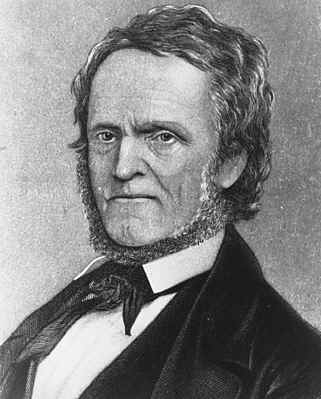
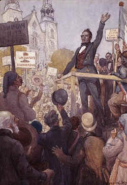

|

(extrait du site des Archives nationales fédérales)
Haut-Canada, 1837-1838
La rébellion dans le Haut-Canada est souvent associée au
nom de William Lyon Mackenzie (1795-1861). Ce
réformateur, aussi rédacteur en chef de journal et maire de
Toronto, était un redoutable orateur qui, pendant de nombreuses
années, avait mené une guerre des mots contre l'oligarchie
régnante dans la province. C'est en 1837, après avoir
constaté l'échec de ses tentatives politiques de réforme,
qu'il rallia radicaux et modérés à un projet mal conçu de
renversement du gouvernement en place.
 Inspiré
par les incidents violents et les affrontements entre les
troupes britanniques régulières et les Patriotes du Bas-Canada
près de Montréal en novembre 1837, Mackenzie était convaincu
que le moment d'agir était arrivé. La majorité de ses
sympathisants se trouvait concentrée au nord et à l'ouest de
Toronto et il y recruta des centaines de mécontents. Mackenzie
a établi ses quartiers généraux à la Taverne Montgomery, et
le 5 décembre 1837 il a entrepris de marcher sur Toronto avec
environ 800 rebelles, mal équipés et sans formation.
Puisque les troupes britanniques régulières étaient occupées
dans le Bas-Canada, c'est un petit groupe de miliciens locaux
qui fut rapidement mis sur pied pour faire face aux forces
rebelles. Malgré leur nombre inférieur, ceux-ci réussirent à
bloquer l'avance de Mackenzie et de ses hommes vers Toronto.
Deux jours plus tard, environ 1000 miliciens et volontaires
loyaux contre-attaquaient ce qui restait des forces rebelles de
Mackenzie près de la Taverne Montgomery et les mettaient en déroute,
après un bref mais violent engagement.
Une deuxième force rebelle avait été mise sur pied dans la
région de Brantford par le docteur Charles Duncombe (1767-1862)
et Eliakim Malcolm (1801-1874). Le 14 décembre 1837, près du
village de Scotland, ils firent face à une forte troupe de
miliciens dirigée par le colonel Allan MacNab (1798-1862) et
furent facilement défaits. Duncombe et Malcolm durent s'exiler
aux États-Unis.
Ce dispersement des troupes de Duncombe marque la fin de la rébellion
dans le Haut-Canada. Deux semaines plus tard, Mackenzie (qui s'était
aussi enfui aux États-Unis) et une petite troupe d'exilés et
de sympathisants américains occupèrent l'île Navy, sur la
rivière Niagara. Un navire de ravitaillement américain, le Caroline,
fut capturé et incendié, mais les rebelles, mal équipés et
peu organisés, furent finalement chassés de l'île.
La plupart des chefs rebelles ont fui la province. Plusieurs,
comme Mackenzie et Duncombe, se sont réfugiés aux États-Unis,
mais plus de 800 de leurs partisans ont été mis aux arrêts.
Même si la plupart ont été par la suite relâchés ou
graciés, deux des principaux lieutenants de Mackenzie ont été
pendus pour trahison, alors que plus d'une vingtaine d'autres
ont été déportés dans une colonie pénitentiaire en
Australie.
Quelques exilés et sympathisants américains (connus sous le nom de Patriot
Hunters) ont continué pendant quelques mois de menacer la
frontière; ils ont lancé une série de raids en 1838. Les principaux
incidents eurent lieu à Short Hills, dans la péninsule du Niagara, en
juin 1838, à Windmill en novembre et sur la frontière entre Detroit et
Windsor en décembre. Ces engagements ont été beaucoup plus violents
que les actes de rébellion qui les avaient inspirés. La réponse
militaire a été rapide et décisive. Ces raids sur la frontière
étaient sérieux, même s'ils étaient mal organisés, et les troupes
régulières britanniques et les troupes de miliciens du Haut-Canada s'y
sont opposés en grand nombre. Les envahisseurs ont été repoussés et
la justice a suivi son cours : quinze rebelles ont été pendus et des
dizaines d'autres, déportés dans les colonies pénitentiaires de
Tasmanie.
Bas-Canada, 1837-1838
 La
rébellion de 1837-1838 dans le Bas-Canada a été beaucoup plus
violente que celle dans le Haut-Canada. Au cours du printemps et
de l'été 1837, les chefs réformistes de la province, dont le
principal était Louis-Joseph Papineau (1786-1871), ont
tiré parti des tensions politiques de longue date pour mettre
sur pied une large force d'intervention rebelle. La situation
était tellement tendue qu'en octobre 1837 toutes les troupes
britanniques régulières ont été retirées du Haut-Canada et
transférées dans le Bas-Canada.
C'était une bataille perdue d'avance. Les troupes rebelles
ne faisaient pas le poids devant l'importante force militaire
gouvernementale, sous la direction du général sir John
Colborne (1778-1863), complétée par un grand nombre de
miliciens loyaux. Les Patriotes rebelles firent face aux troupes
et à la milice britanniques à trois occasions : à
Saint-Denis, à Saint-Charles et à Saint-Eustache. Les rebelles
furent victorieux à Saint-Denis, le 23 novembre 1837, alors
qu'ils étaient dirigés par le docteur Wolfred Nelson (1791-1863). Le 25 novembre, le lieutenant-colonel George
Wetherall (1778-1868) a dirigé les troupes gouvernementales qui
ont infligé une défaite aux rebelles à Saint-Charles. La
bataille de Saint-Eustache, le 14 décembre suivant, a aussi
été remportée par les 1500 soldats des troupes régulières
et de milice, dirigées par le général Colborne, face à des
rebelles beaucoup moins nombreux, sous la direction d'Amury
Girod (1800-1837). Selon l'historienne Elinor Kyte Senior, les
pertes ont été très inégales : plus de 300 morts au
combat ou par suite de leurs blessures du côté des insurgés
et moins de 30 du côté des forces gouvernementales.
 La
loi martiale a été déclarée et de nombreux rebelles, dont
Louis-Joseph Papineau, ont dû s'enfuir aux États-Unis. Des centaines
ont été arrêtés, et sept, y compris le docteur Wolfred Nelson, ont
été envoyés en exil aux Bermudes. À l'instar de ce qui se passait
dans le Haut-Canada, des Patriotes exilés et des sympathisants
américains ont joint leurs forces. Tôt en novembre 1838, sous le
commandement de Robert Nelson (1794-1873), du docteur Cyrille Côté
(1809-1850) et de quelques autres, ils ont attaqué Napierville,
quelques autres villages ainsi que le manoir de Beauharnois. Ils
n'avaient aucune chance contre les troupes gouvernementales bien
entraînées et fortement armées, et ces escarmouches ont été
rapidement maîtrisées. À la suite des procès de l'automne 1839,
douze rebelles du Bas-Canada ont été pendus pour leur participation à
cette rébellion et environ 130 autres ont été déportés dans les
colonies pénitentiaires de Tasmanie. Quelques-uns des insurgés sont
demeurés aux États-Unis, comme le docteur Edmund B. O'Callaghan (1797-1880), alors que d'autres sont revenus au Canada après la
proclamation d'une amnistie, dont Louis-Joseph Papineau. . La
loi martiale a été déclarée et de nombreux rebelles, dont
Louis-Joseph Papineau, ont dû s'enfuir aux États-Unis. Des centaines
ont été arrêtés, et sept, y compris le docteur Wolfred Nelson, ont
été envoyés en exil aux Bermudes. À l'instar de ce qui se passait
dans le Haut-Canada, des Patriotes exilés et des sympathisants
américains ont joint leurs forces. Tôt en novembre 1838, sous le
commandement de Robert Nelson (1794-1873), du docteur Cyrille Côté
(1809-1850) et de quelques autres, ils ont attaqué Napierville,
quelques autres villages ainsi que le manoir de Beauharnois. Ils
n'avaient aucune chance contre les troupes gouvernementales bien
entraînées et fortement armées, et ces escarmouches ont été
rapidement maîtrisées. À la suite des procès de l'automne 1839,
douze rebelles du Bas-Canada ont été pendus pour leur participation à
cette rébellion et environ 130 autres ont été déportés dans les
colonies pénitentiaires de Tasmanie. Quelques-uns des insurgés sont
demeurés aux États-Unis, comme le docteur Edmund B. O'Callaghan (1797-1880), alors que d'autres sont revenus au Canada après la
proclamation d'une amnistie, dont Louis-Joseph Papineau. .
Ce qui avait commencé par un
problème politique s'est finalement résolu par la politique.
En mai 1838, Lord Durham commençait son
enquête à Québec à propos de la situation dans les deux
Canadas. Moins de six mois après, il fut rappelé en
Grande-Bretagne à cause d'un différend avec le gouvernement
britannique. Malgré tout, il a soumis un rapport en février
1839 dans lequel il recommandait de profondes réformes dans les
colonies.
Ce rapport, controversé à cause de ses prises de
position anti-francophones, a entraîné tout de même l'union
des deux Canadas en 1840 et l'avènement du gouvernement
responsable en 1848.

|